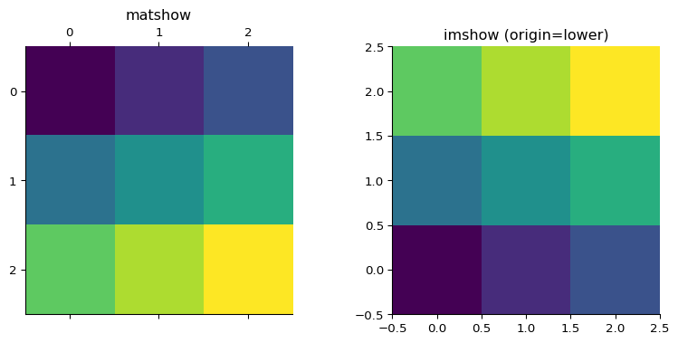
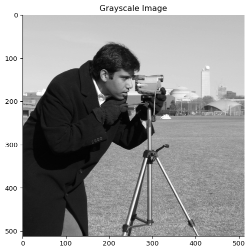
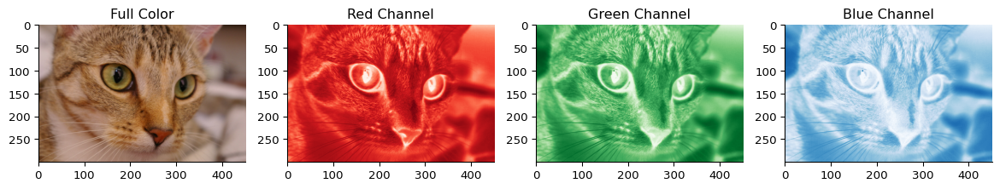
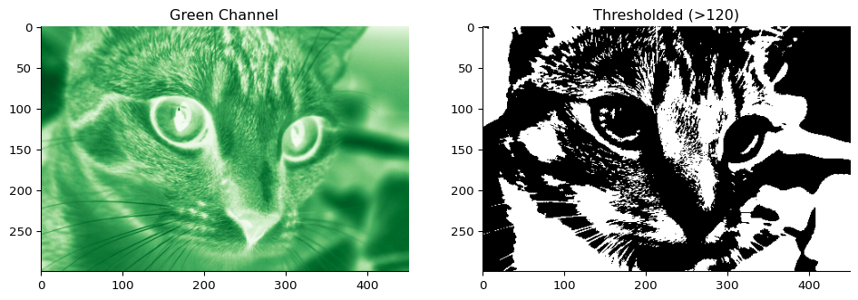

NumPy Arrays Beyond 1D
Multi-dimensional arrays enable representation of: - 2D: Grid/Matrix (rows × columns) - 3D: Cuboid/Tensor (depth × rows × columns) - nD: Higher dimensions
import numpy as np
from numpy import random
rng = random.default_rng(seed=24)
# 2D array (3×3 matrix)
array_2d = rng.random((3, 3))
print(f"Shape: {array_2d.shape}")
print(array_2d)
Shape: (3, 3)
[[0.33026884 0.40517732 0.57473782]
[0.50639977 0.56421251 0.56968731]
[0.87411653 0.08643046 0.74247527]]
Indexing Multi-dimensional Arrays
Row-major order: [row, column] (like [y, x])
# Access single element
print("Element at [1,2]:", array_2d[1, 2])
# Access entire row
print("First row:", array_2d[0, :])
# Access entire column
print("First column:", array_2d[:, 0])
Element at [1,2]: 0.5696873105084019
First row: [0.33026884 0.40517732 0.57473782]
First column: [0.33026884 0.50639977 0.87411653]
Slicing works with multiple dimensions:
print("First 2 rows:\n", array_2d[:2])
First 2 rows:
[[0.33026884 0.40517732 0.57473782]
[0.50639977 0.56421251 0.56968731]]
Array Properties
# Creating arrays with different shapes
zeros_2d = np.zeros((2, 3)) # 2 rows, 3 columns
random_3d = rng.integers(0, 3, size=(2, 3, 4)) # 2×3×4 tensor
print("2D shape:", zeros_2d.shape)
print("3D shape:", random_3d.shape)
print("3D rank/dimensions:", random_3d.ndim)
2D shape: (2, 3)
3D shape: (2, 3, 4)
3D rank/dimensions: 3
Terminology: - Rank/ndim: Number of dimensions - Matrix: Rank 2 array - Tensor: Rank 3+ array
Operations Along Axes
Axis-specific operations:
matrix = rng.integers(0, 5, size=(3, 4))
print("Original matrix:\n", matrix)
print("Sum along axis 0 (columns):", matrix.sum(axis=0))
print("Sum along axis 1 (rows):", matrix.sum(axis=1))
print("Mean along axis 0:", np.mean(matrix, axis=0))
Original matrix:
[[0 2 4 3]
[4 1 4 0]
[2 3 4 3]]
Sum along axis 0 (columns): [ 6 6 12 6]
Sum along axis 1 (rows): [ 9 9 12]
Mean along axis 0: [2. 2. 4. 2.]
Axis 0: Operations across rows (result has column shape)
Axis 1: Operations across columns (result has row shape)
Reshaping and Flattening
Reshape without changing data:
arr_1d = np.arange(12)
arr_2d = arr_1d.reshape((3, 4))
arr_3d = arr_1d.reshape((2, 2, 3))
print("1D:", arr_1d)
print("2D (3×4):\n", arr_2d)
print("3D shape:", arr_3d.shape)
1D: [ 0 1 2 3 4 5 6 7 8 9 10 11]
2D (3×4):
[[ 0 1 2 3]
[ 4 5 6 7]
[ 8 9 10 11]]
3D shape: (2, 2, 3)
Using -1 for automatic dimension:
# -1 means "figure out this dimension"
auto_reshape = arr_1d.reshape(-1, 4) # ? rows, 4 columns
print("Auto-reshaped:\n", auto_reshape)
Auto-reshaped:
[[ 0 1 2 3]
[ 4 5 6 7]
[ 8 9 10 11]]
Flattening Arrays
ravel() - returns view (shares data):
matrix = rng.integers(0, 10, (2, 3))
print("Original:\n", matrix)
view = matrix.ravel()
view[0] = 99 # Changes original!
print("After modifying view:\n", matrix)
Original:
[[7 0 4]
[4 7 4]]
After modifying view:
[[99 0 4]
[ 4 7 4]]
flatten() - returns copy:
matrix = rng.integers(0, 10, (2, 3))
copy = matrix.flatten()
copy[0] = 99 # Original unchanged
print("Original unchanged:\n", matrix)
Original unchanged:
[[6 9 5]
[5 5 3]]
Broadcasting
Combine arrays of different shapes automatically:
matrix = np.array([[1, 2, 3],
[4, 5, 6]])
vector = np.array([10, 20, 30])
# Vector is broadcast to each row
result = matrix + vector
print("Matrix + Vector:\n", result)
Matrix + Vector:
[[11 22 33]
[14 25 36]]
Create grids with broadcasting:
row_vec = np.arange(3).reshape(1, -1) # Shape: (1, 3)
col_vec = np.arange(3).reshape(-1, 1) # Shape: (3, 1)
grid = row_vec + col_vec # Shape: (3, 3)
print("Broadcast grid:\n", grid)
Broadcast grid:
[[0 1 2]
[1 2 3]
[2 3 4]]
Linear Algebra with NumPy
Matrix operations for solving systems: \[A\mathbf{x} = \mathbf{b}\]
# System: 2x + 3y + z = 5, 4x - y = 1, 2y + z = 3
A = np.array([[2, 3, 1],
[4, -1, 0],
[0, 2, 1]])
b = np.array([[5], [1], [3]])
# Solve the system
x = np.linalg.solve(A, b)
print("Solution:", x.flatten())
# Verify: A @ x should equal b
print("Verification:\n", A @ x)
Solution: [0.5 1. 1. ]
Verification:
[[5.]
[1.]
[3.]]
Linear Algebra Operations
# Matrix multiplication with @
result = A @ x
# Transpose with .T
print("b transpose:", b.T)
# Dot product
dot_product = np.dot(b.T, b)
print("Dot product:", dot_product)
# Matrix inverse
A_inv = np.linalg.inv(A)
x_alt = A_inv @ b # Alternative solution method
b transpose: [[5 1 3]]
Dot product: [[35]]
NumPy.linalg provides: inverse, solve, eigenvalues, SVD, etc.
Arrays as Images
Visualize 2D arrays as images:
import matplotlib.pyplot as plt
# Simple matrix visualization
matrix = np.array([[1, 2, 3], [4, 5, 6], [7, 8, 9]])
fig, (ax1, ax2) = plt.subplots(1, 2, figsize=(10, 4))
ax1.matshow(matrix)
ax1.set_title('matshow')
ax2.imshow(matrix, origin='lower')
ax2.set_title('imshow (origin=lower)')
Text(0.5, 1.0, 'imshow (origin=lower)')

Working with Real Images
from skimage import data
# Grayscale image
gray_image = data.camera()
print("Image shape:", gray_image.shape)
fig, ax = plt.subplots(figsize=(6, 6))
ax.imshow(gray_image, cmap='gray')
ax.set_title('Grayscale Image')
Text(0.5, 1.0, 'Grayscale Image')
Images are arrays: Each pixel is a number (intensity)
Color Images (3D Arrays)
# Color image has 3 channels: RGB
color_image = data.chelsea()
print("Color image shape:", color_image.shape)
fig, axes = plt.subplots(1, 4, figsize=(15, 4))
axes[0].imshow(color_image)
axes[0].set_title('Full Color')
# Individual color channels
channels = ['Reds', 'Greens', 'Blues']
titles = ['Red Channel', 'Green Channel', 'Blue Channel']
for i, (cmap, title) in enumerate(zip(channels, titles)):
axes[i+1].imshow(color_image[:, :, i], cmap=cmap)
axes[i+1].set_title(title)
Color image shape: (300, 451, 3)

Boolean Operations on Images
# Extract green channel
green = color_image[:, :, 1]
# Create binary mask
threshold_mask = green > 120
fig, (ax1, ax2) = plt.subplots(1, 2, figsize=(12, 4))
ax1.imshow(green, cmap='Greens')
ax1.set_title('Green Channel')
ax2.imshow(threshold_mask, cmap='gray')
ax2.set_title('Thresholded (>120)')
Text(0.5, 1.0, 'Thresholded (>120)')
Logical operations: & (AND), | (OR), ~ (NOT)
Key Takeaways
- Multi-dimensional arrays represent grids, images, tensors
- Indexing:
[row, col] for 2D arrays
- Axis operations reduce along specific dimensions
- Reshaping changes shape without changing data
- Broadcasting enables operations on different shapes
- Linear algebra operations available in
np.linalg
- Images are just arrays of pixel values
- Boolean indexing works on multi-dimensional arrays